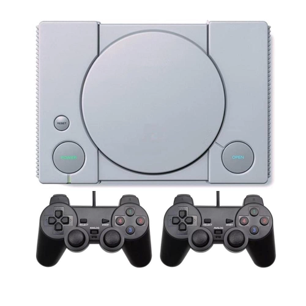

O Início da Revolução: PlayStation 1
Lançado em 1994, o PlayStation 1 (PS1) foi o ponto de partida dessa jornada revolucionária. Como o primeiro console da Sony, o PS1 introduziu o mundo ao poder dos jogos 3D, oferecendo gráficos e experiências imersivas que eram inéditos na época. O sucesso do PS1 foi catalisado por uma vasta gama de títulos memoráveis, como Final Fantasy VII e Metal Gear Solid, que estabeleceram novos padrões de narrativa e jogabilidade.

Jogos Exemplares
- Final Fantasy VII
- Metal Gear Solid
- Gran Turismo